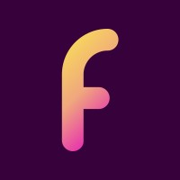
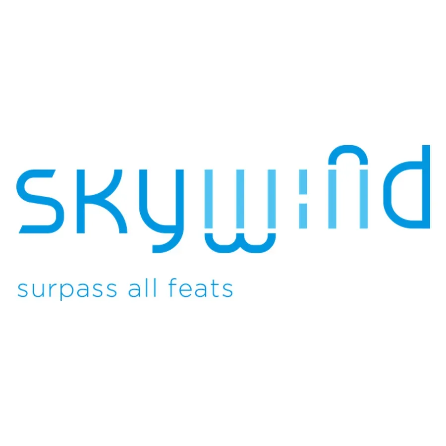

14+ years designing digital products across FinTech, enterprise B2B, health tech, hospitality, consumer lifestyle, and education — spanning Taiwan, Hong Kong, Southeast Asia, and San Francisco.
Sole designer for the full JUJI product suite — mobile app, marketing website, CMS, and Webflow maintenance. Responsible for integrating business opportunity analysis, user profiling, and risk assessment into a coherent product experience across every touchpoint.

Designed UX and UI for OpenApply, an international school application platform. Focused on distilling key information and core functions from the existing website into a streamlined parent-facing mobile experience.
Led the design practice at Cloud Interactive, managing a 12-person design team and driving design thinking culture across product teams. Shared passion for problem-solving through user-centred design and mentored junior to mid-level designers.
Taipei-based Sr. UI/UX designer solving complex product problems through design thinking and user research. Conducted research studies, synthesised user insights, and translated findings into actionable design decisions.

Designed for both local and international clients across industries — including Eslite Hong Kong, RT-Mart (wine app), and Wing CRM. Covered end-to-end product design from concept through UI delivery.
Took time off as the primary caregiver for my son. Once he reached school age, I used the remaining time to study UX/UI design, build my portfolio, and transition into the digital product design field — a deliberate pivot from graphic design into UX.
Graphic designer at an advertising agency — responsible for brand communication materials across print and digital channels.
Visual designer responsible for product brand direction and creative execution across the full product lifecycle.
Want to see the work behind the career?
View My Projects